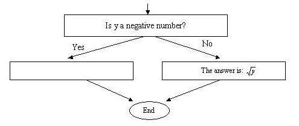

1) Find out the name of operating system that you will be using for this course.
2) Find out what type of text editor is recommended by the instructor for this course.
3) What are the steps that you need to take to create a program?
4) In the following diagram write a question in the blank box that best fits the statements that have appeared after the box. Assume that just before the blank box you have read the values for x and y.
5) In the following diagram write an English statement in the blank box that best fits the statement that has appeared before the box.

6) Which one of these two are more difficult to do, problem-solving
or programming? Explain your answer.
7) How are you going to communicate with the computer to solve a problem?